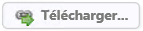
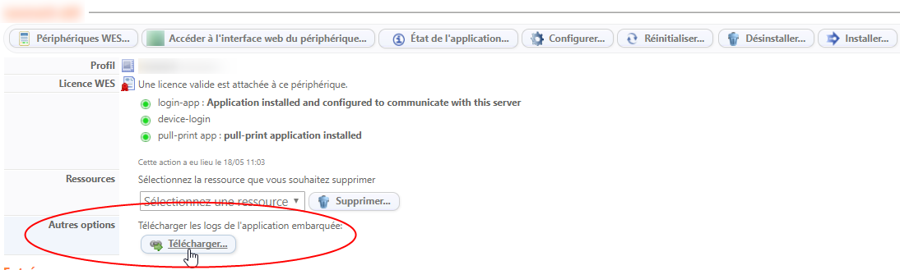

Procédure
Une fois activées (cf. Activer les fichiers traces), les traces sont enregistrées par défaut dans le dossier C:\Program Files\Doxense\Watchdoc\logs. Rendez-vous dans ce dossier, puis ouvrez et exploitez les données enregistrées dans les fichiers de traces.
Si l'analyse des fichiers de traces dépasse votre capacité d'analyse, ouvrez un ticket dans Connect et joignez-y les fichiers traces qui seront adressés au Support Doxense.
Il peut également être utile d'utiliser l'outil Diag Tool pour générer un fichier de traces global sur lequel le Support peut s'appuyer pour analyser les dysfonctionnements de Watchdoc (cf. Utiliser Diag Tool).
Exploiter les traces des WES Java (WES traces)
Lorsqu'une anomalie se produit impliquant les WES :
-
depuis le Menu principal de Watchdoc > section Exploitation ;
-
sélectionnez la file concernée, puis cliquez sur l'onglet Propriétés ;
-
dans la section WES > Sous-section Autres options, cliquez sur le bouton

;
Augmenter le niveau de traces de Watchdoc en ligne de commande
Par défaut, les traces sont configurées avec le niveau INFO. S'il est nécessaire d'augmenter ce niveau, utilisez l'outil en ligne de commande WCLI :
-
ouvrez une ligne de commande ;
-
placez-vous dans le répertoire d'installation de Watchdoc :

-
exécutez la commande suivante :
wcli LOG /server=localhost /level=DEBUG
Dans cette commande :
-
le paramètre server désigne le serveur sur lequel le service Watchdoc.exe est en cours d'exécution ;
-
Le paramètre password désigne le mot de passe de maintenance du serveur Watchdoc ciblé ;
-
Le paramètre level désigne le niveau de tracse que l'on souhaite appliquer (DEBUG ou INFO).
Le niveau de trace appliqué après commande est effectif jusqu'au redémarrage suivant du service Watchdoc ou jusqu'à l'exécution de la même commande paramétrée avec le level INFO.